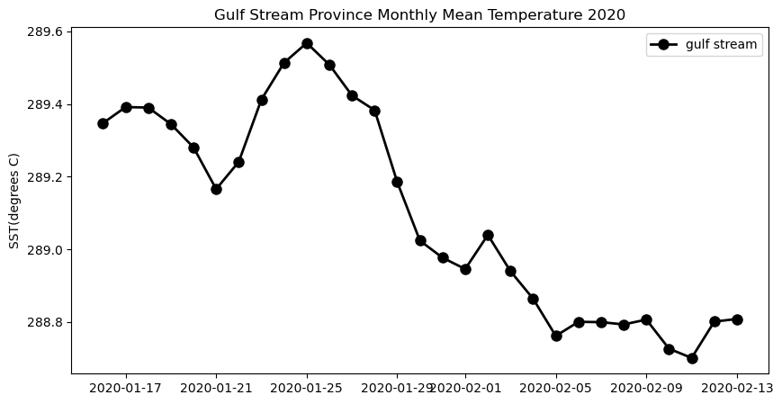

How to access and download sea surface temperature from NASA Earthdata
How to trim satellite data to specific bounding coordinates
How to cropped satellite data
How to apply shapefiles as masks to satellite data
How to compute and plot a monthly mean from satellite data
Summary
In this example, we will utilize the earthdatalogin R package to retrieve sea surface temperature data from NASA Earthdata.
This example is adapted from the NOAA CoastWatch Satellite Data Tutorials. To explore the full range of tutorials on accessing and utilizing oceanographic satellite data, visit the NOAA CoastWatch Tutorial Github repository.
GHRSST Level 4 AVHRR_OI Global Blended Sea Surface Temperature Analysis (GDS2) from NCEI
This NOAA blended SST is a moderate resolution satellite-based gap-free sea surface temperature (SST) product. We will use the daily data. https://cmr.earthdata.nasa.gov/search/concepts/C2036881712-POCLOUD.html
Longhurst Marine Provinces
The dataset represents the division of the world oceans into provinces as defined by Longhurst (1995; 1998; 2006). This division has been based on the prevailing role of physical forcing as a regulator of phytoplankton distribution.
The Longhurst Marine Provinces dataset is available online (https://www.marineregions.org/downloads.php) and within the shapes folder associated with this repository. For this exercise we will use the Gulf Stream province (ProvCode: GFST)
../images/longhurst.png
Datasets used
NOAA Geo-polar Blended Analysis Sea-Surface Temperature, Global, Monthly, 5km, 2019-Present
The NOAA geo-polar blended SST is a high resolution satellite-based sea surface temperature (SST) product that combines SST data from US, Japanese and European geostationary infrared imagers, and low-earth orbiting infrared (U.S. and European) SST data, into a single product. We will use the monthly composite. https://coastwatch.pfeg.noaa.gov/erddap/griddap/NOAA_DHW_monthly
Longhurst Marine Provinces
The dataset represents the division of the world oceans into provinces as defined by Longhurst (1995; 1998; 2006). This division has been based on the prevailing role of physical forcing as a regulator of phytoplankton distribution. The Longhurst Marine Provinces dataset is available online (https://www.marineregions.org/downloads.php) and within the shapes folder associated with this repository. For this tutorial we will use the Gulf Stream province (ProvCode: GFST)
Import packages
Note: Make sure you have at least version 0.10.0 of regionmask * To install with conda use “conda install -c conda-forge regionmask=0.10.0 cartopy”
import earthaccess from pprint import pprintimport xarray as xrimport geopandas as gpd# !pip install regionmaskimport regionmaskimport osimport matplotlib.pyplot as pltimport cartopy.crs as ccrsimport cartopy.feature as cfeaturefrom cartopy.mpl.ticker import LongitudeFormatter, LatitudeFormatterimport warningswarnings.filterwarnings("ignore")
Collecting regionmask
Downloading regionmask-0.12.1-py3-none-any.whl.metadata (3.9 kB)
Requirement already satisfied: geopandas>=0.10 in /srv/conda/envs/notebook/lib/python3.10/site-packages (from regionmask) (0.14.4)
Requirement already satisfied: numpy>=1.21 in /srv/conda/envs/notebook/lib/python3.10/site-packages (from regionmask) (1.26.4)
Requirement already satisfied: packaging>=21.3 in /srv/conda/envs/notebook/lib/python3.10/site-packages (from regionmask) (24.0)
Requirement already satisfied: pooch>=1.4 in /srv/conda/envs/notebook/lib/python3.10/site-packages (from regionmask) (1.8.1)
Requirement already satisfied: rasterio>=1.2 in /srv/conda/envs/notebook/lib/python3.10/site-packages (from regionmask) (1.3.9)
Requirement already satisfied: shapely>=1.8 in /srv/conda/envs/notebook/lib/python3.10/site-packages (from regionmask) (2.0.4)
Requirement already satisfied: xarray>=0.20 in /srv/conda/envs/notebook/lib/python3.10/site-packages (from regionmask) (2024.3.0)
Requirement already satisfied: fiona>=1.8.21 in /srv/conda/envs/notebook/lib/python3.10/site-packages (from geopandas>=0.10->regionmask) (1.9.6)
Requirement already satisfied: pandas>=1.4.0 in /srv/conda/envs/notebook/lib/python3.10/site-packages (from geopandas>=0.10->regionmask) (2.2.2)
Requirement already satisfied: pyproj>=3.3.0 in /srv/conda/envs/notebook/lib/python3.10/site-packages (from geopandas>=0.10->regionmask) (3.6.1)
Requirement already satisfied: platformdirs>=2.5.0 in /srv/conda/envs/notebook/lib/python3.10/site-packages (from pooch>=1.4->regionmask) (4.2.1)
Requirement already satisfied: requests>=2.19.0 in /srv/conda/envs/notebook/lib/python3.10/site-packages (from pooch>=1.4->regionmask) (2.31.0)
Requirement already satisfied: affine in /srv/conda/envs/notebook/lib/python3.10/site-packages (from rasterio>=1.2->regionmask) (2.4.0)
Requirement already satisfied: attrs in /srv/conda/envs/notebook/lib/python3.10/site-packages (from rasterio>=1.2->regionmask) (23.2.0)
Requirement already satisfied: certifi in /srv/conda/envs/notebook/lib/python3.10/site-packages (from rasterio>=1.2->regionmask) (2023.11.17)
Requirement already satisfied: click>=4.0 in /srv/conda/envs/notebook/lib/python3.10/site-packages (from rasterio>=1.2->regionmask) (8.1.7)
Requirement already satisfied: cligj>=0.5 in /srv/conda/envs/notebook/lib/python3.10/site-packages (from rasterio>=1.2->regionmask) (0.7.2)
Requirement already satisfied: snuggs>=1.4.1 in /srv/conda/envs/notebook/lib/python3.10/site-packages (from rasterio>=1.2->regionmask) (1.4.7)
Requirement already satisfied: click-plugins in /srv/conda/envs/notebook/lib/python3.10/site-packages (from rasterio>=1.2->regionmask) (1.1.1)
Requirement already satisfied: setuptools in /srv/conda/envs/notebook/lib/python3.10/site-packages (from rasterio>=1.2->regionmask) (69.5.1)
Requirement already satisfied: six in /srv/conda/envs/notebook/lib/python3.10/site-packages (from fiona>=1.8.21->geopandas>=0.10->regionmask) (1.16.0)
Requirement already satisfied: python-dateutil>=2.8.2 in /srv/conda/envs/notebook/lib/python3.10/site-packages (from pandas>=1.4.0->geopandas>=0.10->regionmask) (2.9.0)
Requirement already satisfied: pytz>=2020.1 in /srv/conda/envs/notebook/lib/python3.10/site-packages (from pandas>=1.4.0->geopandas>=0.10->regionmask) (2024.1)
Requirement already satisfied: tzdata>=2022.7 in /srv/conda/envs/notebook/lib/python3.10/site-packages (from pandas>=1.4.0->geopandas>=0.10->regionmask) (2024.1)
Requirement already satisfied: charset-normalizer<4,>=2 in /srv/conda/envs/notebook/lib/python3.10/site-packages (from requests>=2.19.0->pooch>=1.4->regionmask) (3.3.2)
Requirement already satisfied: idna<4,>=2.5 in /srv/conda/envs/notebook/lib/python3.10/site-packages (from requests>=2.19.0->pooch>=1.4->regionmask) (3.7)
Requirement already satisfied: urllib3<3,>=1.21.1 in /srv/conda/envs/notebook/lib/python3.10/site-packages (from requests>=2.19.0->pooch>=1.4->regionmask) (1.26.18)
Requirement already satisfied: pyparsing>=2.1.6 in /srv/conda/envs/notebook/lib/python3.10/site-packages (from snuggs>=1.4.1->rasterio>=1.2->regionmask) (3.1.2)
Downloading regionmask-0.12.1-py3-none-any.whl (73 kB)
━━━━━━━━━━━━━━━━━━━━━━━━━━━━━━━━━━━━━━━━ 73.7/73.7 kB 3.6 MB/s eta 0:00:00
Installing collected packages: regionmask
Successfully installed regionmask-0.12.1
os.environ["HOME"] ="/home/jovyan"
auth = earthaccess.login()# are we authenticated?ifnot auth.authenticated:# ask for credentials and persist them in a .netrc file auth.login(strategy="interactive", persist=True)
Load the Longhurst Provinces shape files into a geopandas dataframe
The Gulf Stream Province can be isolated using its ProvCode (GFST)
ProvCode ="GFST"# Locate the row with the ProvCode codegulf_stream = shapefiles.loc[shapefiles["ProvCode"] == ProvCode]gulf_stream
ProvCode
ProvDescr
geometry
4
GFST
Westerlies - Gulf Stream Province
POLYGON ((-43.50000 43.50000, -43.50000 42.500...
Find the coordinates of the bounding box
The bounding box is the smallest rectangle that will completely enclose the province.
We will use the bounding box coordinates to subset the satellite data
gs_bnds = gulf_stream.boundsgs_bnds
minx
miny
maxx
maxy
4
-73.5
33.5
-43.5
43.5
Search and access NASA Earthdata with the Collection Concept ID
Shortname
Collection Concept ID
DOI
AVHRR_OI-NCEI-L4-GLOB-v2.1
C2036881712-POCLOUD
10.5067/GHAAO-4BC21
# Search Dataset Unique IDcollection_id ='C2036881712-POCLOUD'results = earthaccess.search_data( concept_id = collection_id, cloud_hosted =True, count =10# Restricting to 10 records returned)
Granules found: 3044
# Define date range and bounding box and searchdate_range = ("2020-01-16", "2020-3-16")# (xmin=-73.5, ymin=33.5, xmax=-43.5, ymax=43.5)bbox = (gs_bnds.minx, gs_bnds.miny, gs_bnds.maxx, gs_bnds.maxy)
# Get results based on date range and bboxresults = earthaccess.search_data( concept_id = collection_id, cloud_hosted =True, temporal = date_range, bounding_box = bbox,)
/srv/conda/envs/notebook/lib/python3.10/site-packages/cmr/queries.py:518: FutureWarning: Calling float on a single element Series is deprecated and will raise a TypeError in the future. Use float(ser.iloc[0]) instead
float(lower_left_lon),
/srv/conda/envs/notebook/lib/python3.10/site-packages/cmr/queries.py:519: FutureWarning: Calling float on a single element Series is deprecated and will raise a TypeError in the future. Use float(ser.iloc[0]) instead
float(lower_left_lat),
/srv/conda/envs/notebook/lib/python3.10/site-packages/cmr/queries.py:520: FutureWarning: Calling float on a single element Series is deprecated and will raise a TypeError in the future. Use float(ser.iloc[0]) instead
float(upper_right_lon),
/srv/conda/envs/notebook/lib/python3.10/site-packages/cmr/queries.py:521: FutureWarning: Calling float on a single element Series is deprecated and will raise a TypeError in the future. Use float(ser.iloc[0]) instead
float(upper_right_lat)
Single-sensor Pathfinder 5.0/5.1 AVHRR SSTs used until 2005; two AVHRRs at a time are used 2007 onward. Sea ice and in-situ data used also are near real time quality for recent period. SST (bulk) is at ambiguous depth because multiple types of observations are used.
Visualize the unmasked data on a map
The map shows the full extent of the bounding box
plt.figure(figsize=(14, 10))# Label axes of a Plate Carree projection with a central longitude of 180:ax1 = plt.subplot(211, projection=ccrs.PlateCarree(central_longitude=180))# Use the lon and lat ranges to set the extent of the map# the 120, 260 lon range will show the whole Pacific# the 15, 55 lat range with capture the range of the dataax1.set_extent([260, 350, 15, 55], ccrs.PlateCarree())# set the tick marks to be slightly inside the map extents# add feature to the mapax1.add_feature(cfeature.LAND, facecolor='0.6')ax1.coastlines()# format the lat and lon axis labelslon_formatter = LongitudeFormatter(zero_direction_label=True)lat_formatter = LatitudeFormatter()ax1.xaxis.set_major_formatter(lon_formatter)ax1.yaxis.set_major_formatter(lat_formatter)ds_subset[0].plot.pcolormesh(ax=ax1, transform=ccrs.PlateCarree(), cmap='jet')plt.title('Satellite Data Before Masking')
Text(0.5, 1.0, 'Satellite Data Before Masking')
Create the region from the shape file
The plot shows the shape of the region and its placement along the US East Coast.
region = regionmask.from_geopandas(gulf_stream)region.plot()
Mask the satellite data
# Create the maskmask = region.mask(ds_subset.lon, ds_subset.lat)# Apply mask the the satellite datamasked_ds = ds_subset.where(mask == region.numbers[0])
Visualize the masked data on a map
These data have been trimmed to contain only values within the Gulf Stream Province
plt.figure(figsize=(14, 10))# Label axes of a Plate Carree projection with a central longitude of 180:ax1 = plt.subplot(211, projection=ccrs.PlateCarree(central_longitude=180))# Use the lon and lat ranges to set the extent of the map# the 120, 260 lon range will show the whole Pacific# the 15, 55 lat range with capture the range of the dataax1.set_extent([260, 350, 15, 55], ccrs.PlateCarree())# set the tick marks to be slightly inside the map extents# add feature to the mapax1.add_feature(cfeature.LAND, facecolor='0.6')ax1.coastlines()# format the lat and lon axis labelslon_formatter = LongitudeFormatter(zero_direction_label=True)lat_formatter = LatitudeFormatter()ax1.xaxis.set_major_formatter(lon_formatter)ax1.yaxis.set_major_formatter(lat_formatter)masked_ds[0].plot.pcolormesh(ax=ax1, transform=ccrs.PlateCarree(), cmap='jet')plt.title('Satellite Data After Masking for Longhurst GFST')
Text(0.5, 1.0, 'Satellite Data After Masking for Longhurst GFST')
Plot the mean seasonal temperature for the province
gulf_stream_meanplt.figure(figsize=(10, 5)) # Plot the SeaWiFS dataplt.plot_date(gulf_stream_mean.time, gulf_stream_mean, 'o', markersize=8, label='gulf stream', c='black', linestyle='-', linewidth=2) plt.title('Gulf Stream Province Monthly Mean Temperature 2020')plt.ylabel('SST(degrees C)') plt.legend()

References
The several CoastWatch Node websites have data catalog containing documentation and links to all the datasets available:
* https://oceanwatch.pifsc.noaa.gov/doc.html
* https://coastwatch.pfeg.noaa.gov/data.html
* https://polarwatch.noaa.gov/catalog/
Sources for marine shape files * https://www.marineregions.org/downloads.php